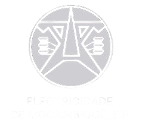

O Energia Alerta é um aplicativo comunitário criado para permitir que moradores da cidade de Nacala Porto reportem problemas relacionados à energia elétrica, como falta de energia, postes danificados, cabos caídos e transformadores com falhas.
O objetivo é melhorar a comunicação entre a comunidade e as autoridades, aumentando a segurança e ajudando na rápida resolução de problemas elétricos. Este projeto não possui fins lucrativos.
Ao permitir que cidadãos reportem problemas facilmente, o aplicativo ajuda a reduzir acidentes, melhorar a iluminação pública e fortalecer a participação comunitária.
Projeto desenvolvido como iniciativa comunitária e escolar para contribuir com a cidade de Nacala Porto.